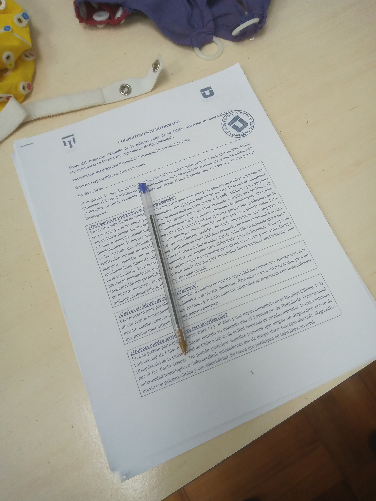
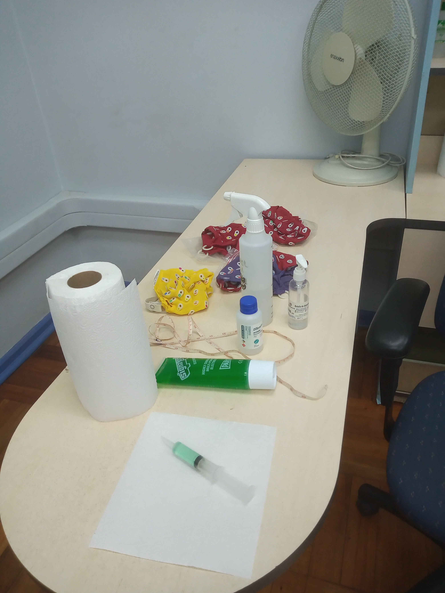
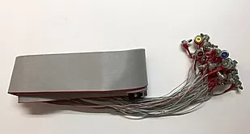
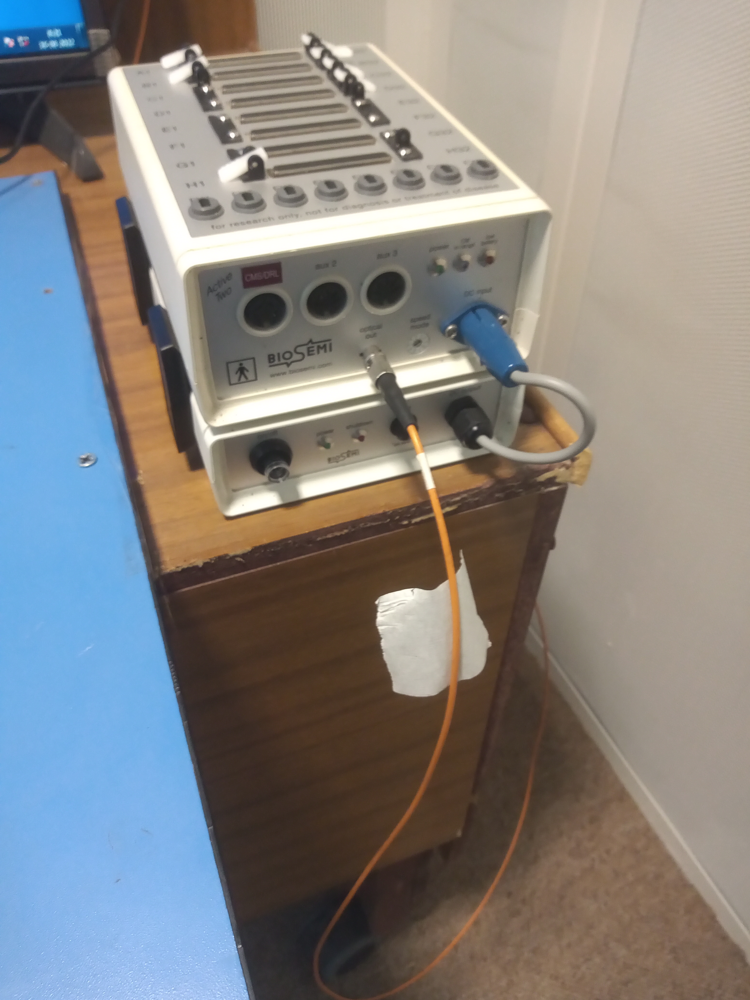
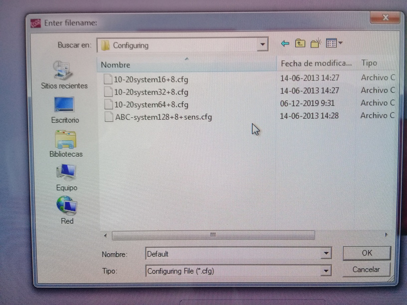

Capítulo 4 Práctico EEG - 4
4.0.1 Día D
Preparación del laboratorio:
- Llegar al menos 40 minutos antes
- Abrir ventanas y ventilar la sala
- Encender: PC de adquisición (computador donde se recolectan los datos de EEG) + PC de estimulación (computador que “genera” la tarea que hace el participante)
Material administrativo:
- Tener consentimientos listos 
- Abrir logbook / bitácora
- Definir y anotar número de identificación (ID) del participante
Insumos:
- Gel conductor
- Jeringas
- Alcohol
- Toallas de papel
- Huincha de medir
- Anillos/stickers para electrodos

Equipamiento:
- PCs (adquisición y estimulación)
- Amplificador y batería (revisar que el amplificador está cargado, ver abajo)
- Interfaz de triggers
- Cables varios (la fibra óptica conecta amplificador a interfaz de triggers)
Gorras y electrodos:
- Gorras EEG (contar con varias tallas)

- Electrodos EEG 
- Electrodos EXG (EOG, mastoides)

Conexiones y configuración inicial:
- Conectar fibra óptica al amplificador 
- Conectar interfaz de triggers al PC de adquisición
- Conectar amplificador a la batería
- Encender amplificador (luz azul parpadeante)

Configuración en PC de adquisición:
- Abrir ActiveView
- Cargar archivo de configuración correspondiente 
- Verificar nivel de batería del amplificador (se enciende una luz azul que parpadea)
- Ajustar tasa de muestreo a 1024 Hz (decimación 1/2)

Verificación de triggers:
- Ejecutar tarea de prueba
- Cambiar visualización de triggers a formato decimal
- Verificar que:
- Los triggers aparecen
- Coinciden con el esquema esperado
- La secuencia es correcta

Llegada del/la participante:
- Hacer sentar y dejar descansar ~10 minutos
- Anotar hora de llegada en la bitácora
- Firmar 3 copias del consentimiento
- Confirmar modalidad de pago (si aplica)
- Ofrecer ir al baño
- Pedir retirar objetos metálicos
Preparación del/la participante:
- Explicar limpieza de piel con alcohol
- Explicar registro EEG, EOG y electrodos de referencia
Mediciones (registrar en logbook):
- Circunferencia de cabeza (definir talla de gorra)
- Distancia nasion–inion
- Distancia entre pabellones auriculares
Electrodos externos:
- Limpiar piel con alcohol (avisar antes)
- Preparar electrodos con sticker y gel (sin exceso)
- Colocar:
- EX1 / EX2: EOG horizontal
- EX3 / EX4: EOG vertical
- EX5 / EX6: mastoideos
Colocación de la gorra:
- Colocar gorra y verificar comodidad
- Ajustar posición:
- Frontal = 10% nasion–inion
- Cz = 50% nasion–inion
- Ajustar correa del mentón
- Retirar etiqueta posterior (electrodo Oz)
- Aplicar gel con jeringa separando el pelo
- Comenzar por electrodos occipitales
- Continuar siguiendo el orden del sistema
- Fijar cables al hombro si es posible
- Conectar electrodos al amplificador
Chequeo de señal:
- Visualizar señal a escala 200 µV
- Revisar impedancias (< 30 kΩ)
- Corregir electrodos inestables
- Probar:
- Parpadeo → EOG vertical
- Mirada izquierda/derecha → EOG horizontal
Instrucciones al participante:
- Pedir silenciar el celular
- Explicar:
- Primero entrenamiento
- Luego experimento
- Indicar teclas de respuesta (1 y 2)
- Pedir parpadear 1–2 veces después de responder
- Reforzar parpadeo sistemático para evitar fatiga
Registro EEG:
- Orden:
- Entrenamiento
- Experimento
- Resting state
- Durante el registro:
- Iniciar primero grabación EEG, luego la tarea
- Verificar señal verde de grabación
- Monitorear:
- Triggers
- Respuestas
- Parpadeos en momentos indicados
- En pausas, chequear estado del participante
Término de la sesión:
- Retirar primero la gorra
- Retirar electrodos externos desde la base
- Ayudar al participante a limpiarse
- Cambiar batería del amplificador
- Limpiar electrodos y gorra
- Dejar el laboratorio ordenado